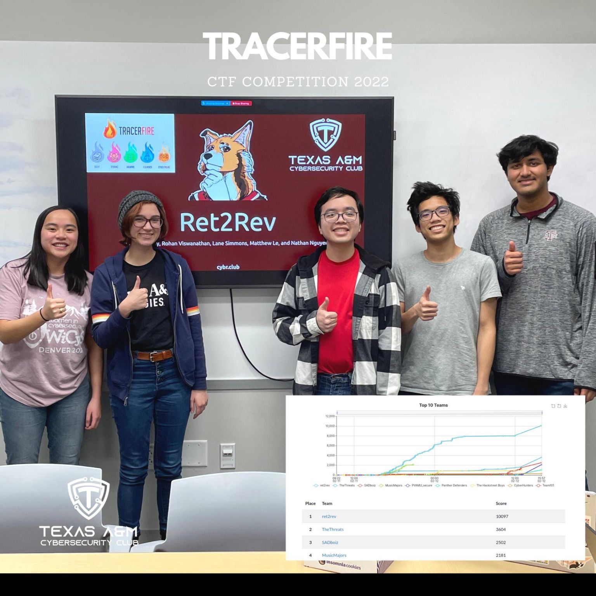
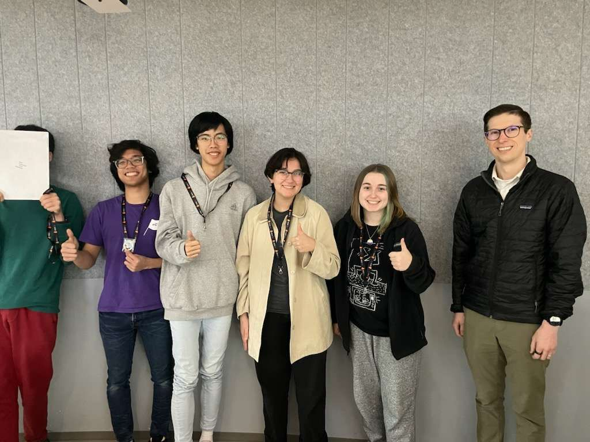

Simple Operating System
In Fall 2023, I took CSCE 410: Operating Systems. Over the course of the semester, we developed a simple operating system based on the structure of Linux. Overall, writing kernel code was surprisngly fun! Recreating Linux was also an incredible challenge. I would honestly say that this class and installing Arch Linux have been my two greatest sources of understanding the internals of the system.
Binary Exploitation Challenges
In January 2022, I joined the TAMUctf development team which creates and hosts cybersecurity challenges for our annual capture the flag competition. I developed a couple of challenges for TAMUctf 2022, but I am most proud of two of my binary exploitation problems. In a trial by fire, I learned how to exploit heap vulnerabilities while working on ctf-sim. live-math-love was also the first C program I ever wrote--although I was familair with the exploit, learning to write in C rather than read it was fun!
These challenges can be found on the official TAMUctf github repository. My aforementioned challenges can be found here for live-math-love and here for ctf-sim.
Cybersecurity Competitions
I have competed in numerous cybersecurity competitions--especially in my freshman year. The challenges in these competitions taught me how to improve my self-teaching skills.
For example, in 2021, I particpated in the NSA Codebreaker challenge. This competition tested my limits as I learned reverse engineering while solving challenges. I was honored to be a "high-performer." Fun fact: I reversed the C++ binary in this competition before I had ever programmed a line of C++ myself!
In 2022, I competed with our university CTF Team, ret2rev, in TracerFIRE X. This CTF focused on digital forensics, but I spent the majority of my time reverse engineering Windows malware. Overall, it was a super fun experience! Our team even got first place.

Last year, I joined ret2rev's TracerFIRE 12 team! I had just as much fun competing this time as I did my first time. The digital forensics challenges were especially fun--and challenging in the best way. I loved unearthing the storyline as I completed more challenges. My team ended up placing second!
